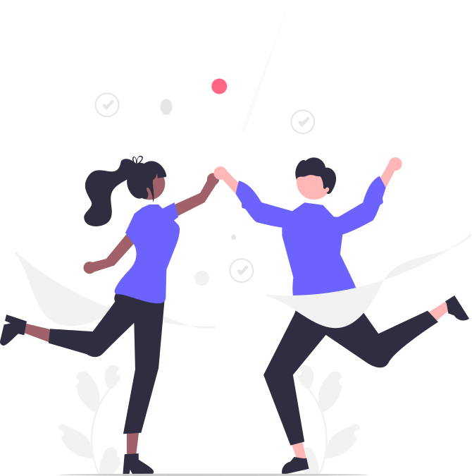

Розпорядок Дня
Розпорядок Дня
Ранок (6:00–12:00)
6:00–6:30
-
Підйом, ранкова гігієна (умивання, чистка зубів, догляд за
шкірою).
- Легке розтягування або дихальні вправи.
6:30–7:00
- Сніданок (збалансований, з білками, вуглеводами й овочами).
- Пиття води або трав'яного чаю.
7:00–8:00
-
Фізичні вправи (біг, йога, тренування вдома чи у спортзалі).
8:00–9:00
- Душ, одяг.
- Планування дня: складання списку завдань із пріоритетами.
9:00–12:00
-
Робота над найважливішими завданнями дня (глибока робота, що
потребує зосередженості).

День (12:00–18:00)
12:00–13:00
-
Обід (збалансований прийом їжі, час для спокійної бесіди або
читання).
13:00–15:00
-
Продовження роботи або навчання (зосередженість на другорядних
завданнях).
15:00–15:30
-
Перерва: прогулянка на свіжому повітрі, медитація, легкий перекус.
15:30–17:30
-
Робота над поточними справами, організація документів чи
підготовка звітів.
17:30–18:00
-
Завершення робочого дня: підбиття підсумків, планування завдань на
завтра.
Вечір (18:00–22:30)
18:00–19:00
- Вечеря (легка та поживна їжа, що сприяє гарному сну).
19:00–20:00
-
Час для сім’ї, спілкування чи хобі (читання, малювання, гра на
музичних інструментах).
20:00–21:00
-
Легка фізична активність (прогулянка, йога, розтяжка) або перегляд
фільму.
21:00–22:00
-
Вечірня гігієна, підготовка до сну (можна включити теплу ванну).
22:00–22:30
- Читання, медитація, роздуми про позитивні моменти дня.
22:30
- Лягати спати, забезпечивши тишу й комфорт.